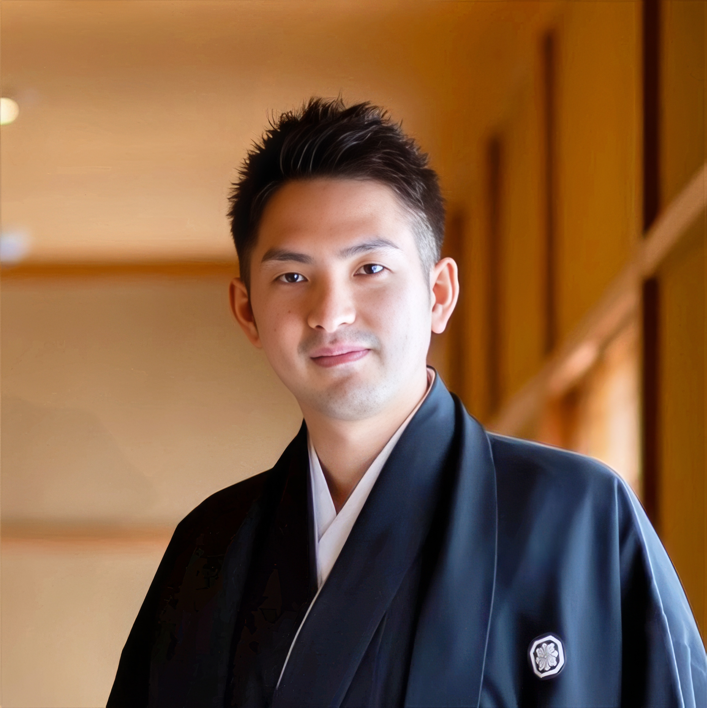

Yasuaki Kameoka
亀岡 恭昂
Vice President, HERO Impact Capital
Director, ZERO INSTITUTE
百代スタジオ 代表取締役
一般社団法人Fora 理事
慶應義塾大学SFC研究所 上席所員
About
1992年生まれ。広島県出身。
東京大学教育学部・教育学研究科を卒業後、ボストン・コンサルティング・グループ（BCG）の Project Leader を経て、2026年に HERO Impact Capital に参画。BCG ではパブリックセクターグループに所属。中央官庁や大学、自治体に対して、科学技術・大学・教育政策や、研究マネジメント戦略、産学官連携・スタートアップ創出戦略を立案するプロジェクトに従事した。
HERO Impact Capital では、東北大学 ZERO INSTITUTE にグローバルに活躍する若手研究者や日本企業を集積させ、大学発スタートアップの創業支援や、大企業と連携したインキュベーションの促進を行う。
慶應義塾大学SFC研究所上席所員として教育・科学技術に関する研究にも携わる。学生時代に一般社団法人Foraを共同創業し、現在も理事を務める。
Style
スタイルの存在論 どのように生きるか？（How） の観点から人生を構成すること。癖（クリナメン）、要請、自分自身さえ忘却する風景、それらの交差点で生きること。Concepts
人生・世界・あわい、そして思考の形式へ。
Aspiration
Education
Career
Papers
亀岡恭昂 & 小玉祥平. (2021). 見本答案への採点を軸に読みを深める「プリズムメソッド」. 読書科学, 63(1), 28–39. https://doi.org/10.19011/sor.63.1_28
Tanaka, K., Arakawa, R., Kameoka, Y., & Sakata, I. (2018). Recategorizing Interdisciplinary Articles using Natural Language Processing and Machine/Deep Learning. 2018 Portland International Conference on Management of Engineering and Technology (PICMET), 1–6. https://doi.org/10.23919/PICMET.2018.8481955
More Publications on Researchmap